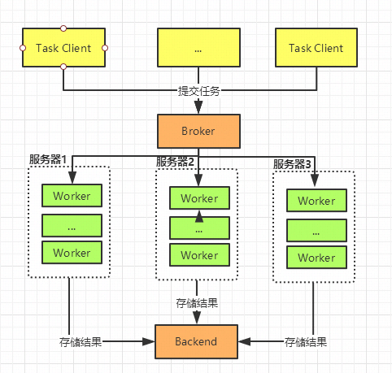

个人简介：
wedo实验君, 数据分析师；热爱生活，热爱写作
celery是一个简单，灵活、可靠的分布式任务执行框架，可以支持大量任务的并发执行。celery采用典型生产者和消费者模型。生产者提交任务到任务队列，众多消费者从任务队列中取任务执行。
Celery由以下三部分构成：消息中间件(Broker)、任务执行单元Worker、结果存储(Backend)
celery安装非常简单, 除了安装celery，本文中使用redis作为消息队列即Broker
# celery 安装 pip install celery # celery 监控 flower pip install flower pip install redis
# redis 安装 yum install redis # redis启动 redis-server /etc/redis.conf
celery的应用开发涉及四个部分
# 项目目录 wedo . ├── config.py ├── __init__.py ├── period_task.py └── tasks.py
celery的实例化，主要包括执行Broker和backend的访问方式，任务模块的申明等
# celery 实例初始化 # __init__.py from celery import Celery app = Celery('wedo') # 创建 Celery 实例 app.config_from_object('wedo.config') # 配置 wedo.config # config.py BROKER_URL = 'redis://10.8.238.2:6379/0' # Broker配置，使用Redis作为消息中间件 CELERY_RESULT_BACKEND = 'redis://10.8.238.2:6379/0' # BACKEND配置，这里使用redis CELERY_RESULT_SERIALIZER = 'json' # 结果序列化方案 CELERY_TASK_RESULT_EXPIRES = 60 * 60 * 24 # 任务过期时间 CELERY_TIMEZONE='Asia/Shanghai' # 时区配置 CELERY_IMPORTS = ( # 指定导入的任务模块,可以指定多个 'wedo.tasks', 'wedo.period_task' )
celery中通过@task的装饰器来进行申明celery任务，其他操作无任何差别
# 任务的定义 # 简单任务 tasks.py import celery import time from celery.utils.log import get_task_logger from wedo import app @app.task def sum(x, y): return x + y @app.task def mul(x, y): time.sleep(5) return x * y
定时任务和实时任务的区别主要是要申明何时执行任务，任务本身也是通过task装饰器来申明
何时执行任务有2种
# 任务的定义 # 定时任务 period_task.py from wedo import app from celery.schedules import crontab @app.on_after_configure.connect def setup_periodic_tasks(sender, **kwargs): sender.add_periodic_task(5.0, to_string.s("celery peroid task"), name='to_string') # 每5秒执行add sender.add_periodic_task( crontab(minute='*/10'), #每10分钟执行一次 send_mail.s('hello, this is a celery'), name='send_mail' ) @app.task def send_mail(content): print('send mail, content is %s' % content) @app.task def to_string(text): return 'this is a %s' % text
任务启动分为worker启动和定时任务beat启动
# -A wedo为应用模块 # -l为日志level # -c 为进程数 celery worker -A wedo -l debug -c 4 # 后台启动 nohup celery worker -A wedo -l debug -c 4 > ./log.log 2>&1 # 从下面的日志可以看出启动了4个任务 # . wedo.period_task.send_mail # . wedo.period_task.to_string # . wedo.tasks.mul # . wedo.tasks.sum -------------- celery@localhost.localdomain v4.4.2 (cliffs) --- ***** ----- -- ******* ---- Linux-3.10.0-327.28.3.el7.x86_64-x86_64-with-centos-7.2.1511-Core 2020-04-25 23:35:26 - *** --- * --- - ** ---------- [config] - ** ---------- .> app: wedo:0x7f05af30d320 - ** ---------- .> transport: redis://10.8.238.2:6379/0 - ** ---------- .> results: redis://10.8.238.2:6379/0 - *** --- * --- .> concurrency: 4 (prefork) -- ******* ---- .> task events: OFF (enable -E to monitor tasks in this worker) --- ***** ----- -------------- [queues] .> celery exchange=celery(direct) key=celery [tasks] . celery.accumulate . celery.backend_cleanup ... . wedo.period_task.send_mail . wedo.period_task.to_string . wedo.tasks.mul . wedo.tasks.sum ... [2020-04-25 23:35:27,617: INFO/MainProcess] celery@localhost.localdomain ready. [2020-04-25 23:35:27,617: DEBUG/MainProcess] basic.qos: prefetch_count->16 [2020-04-25 23:35:27,655: DEBUG/MainProcess] celery@12103675 joined the party
celery beat -A wedo.period_task celery beat v4.4.2 (cliffs) is starting. __ - ... __ - _ LocalTime -> 2020-04-25 23:37:08 Configuration -> . broker -> redis://10.8.238.2:6379/0 . loader -> celery.loaders.app.AppLoader . scheduler -> celery.beat.PersistentScheduler . db -> celerybeat-schedule . logfile -> [stderr]@%WARNING . maxinterval -> 5.00 minutes (300s)
# worker启动是4个进程 \_ /root/anaconda3/envs/post/bin/celery worker -A wedo -l debug -c 4 \_ /root/anaconda3/envs/post/bin/celery worker -A wedo -l debug -c 4 \_ /root/anaconda3/envs/post/bin/celery worker -A wedo -l debug -c 4 \_ /root/anaconda3/envs/post/bin/celery worker -A wedo -l debug -c 4 \_ /root/anaconda3/envs/post/bin/celery worker -A wedo -l debug -c 4
worker和beat的停止
ps auxww | awk '/celery worker/ {print $2}' | xargs kill -9 ps auxww | awk '/celery beat/ {print $2}' | xargs kill -9
任务worker已经启动好了，通过任务调用传递给broker（redis），并返回任务执行结果
任务调用主要有两种，本质是一致的，delay是apply_async的封装，apply_async可以支持更多的任务调用配置
apply_async和delay会返回一个异步的任务结果
value = result.get() # 任务返回值 print(result.__dict__) # 结果信息 print(result.successful()) # 是否成功 print(result.fail()) # 是否失败 print(result.ready()) # 是否执行完成 print(result.state) # 状态 PENDING -> STARTED -> SUCCESS/FAIL
常规任务:
from celery.utils.log import get_logger from wedo.tasks import sum, mul, post_file from celery import group, chain, chord logger = get_logger(__name__) try: result = mul.apply_async(args=(2, 2)) value = result.get() # 等待任务执行完毕后，才会返回任务返回值 print(value) except mul.OperationalError as exc: # 任务异常处理 logger.exception('Sending task raised: %r', exc)
组合任务:
result = group(sum.s(i, i) for i in range(5))() result.get() # [0, 2, 4, 6, 8] result = chain(sum.s(1,2), sum.s(3), mul.s(3))() result.get() # ((1+2)+3)*3=18
celery作为分布式的任务队列框架，worker是可以执行在不同的服务器上的。部署过程和单机上启动是一样。只要把项目代码copy到其他服务器，使用相同命令就可以了。可以思考下，这个是怎么实现的？
对了，就是通过共享Broker队列。使用合适的队列，如redis，单进程单线程的方式可以有效的避免同个任务被不同worker同时执行的情况。
celery worker -A wedo -l debug -c 4

在前面已经了解了celery的主要的功能了。celery还为一些特别的场景提供了需要扩展的功能
有时候我们需要对任务的执行情况做一些监控，比如失败后报警通知。
import celery import time from celery.utils.log import get_task_logger from wedo import app logger = logger = get_task_logger(__name__) class TaskMonitor(celery.Task): def on_failure(self, exc, task_id, args, kwargs, einfo): """failed callback""" logger.info('task id: {0!r} failed: {1!r}'.format(task_id, exc)) def on_success(self, retval, task_id, args, kwargs): """success callback""" logger.info('task id:{} , arg:{} , successful !'.format(task_id,args)) def on_retry(self, exc, task_id, args, kwargs, einfo): """retry callback""" logger.info('task id:{} , arg:{} , retry ! einfo: {}'.format(task_id, args, exc)) @app.task(base=TaskMonitor, bind=True, name='post_file') def post_file(self, file_names): logger.info(self.request.__dict__) try: for i, file in enumerate(file_names): print('the file %s is posted' % file) if not self.request.called_directly: self.update_state(state='PROGRESS', meta={'current': i, 'total': len(file_names)}) time.sleep(2) except Exception as exec: raise self.retry(exc=exec, countdown=3, max_retries=5)
celery做为支持分布式，理论上可以无限扩展worker。默认情况下celery提交任务后，任务会放入名为celery的队列，所有在线的worker都会从任务队列中获取任务，任一个worker都有可能执行这个任务。有时候，有时候任务的特殊性或者机器本身的限制，某些任务只能跑在某些worker上。celery提供了queue在区别不同的worker，很好的支持这种情况。
celery worker -A wedo -l debug -c 4 -Q celery,hipri
queue=*来指定需要执行workerresult = mul.apply_async(args=(2, 2), queue='hipri')
如果你想通过可视化的方式，查看celery的一切。flower提供可行的解决方案，十分的方便
flower -A wedo --port=6006 # web访问 http://10.8.238.2:6006/
本文和大家了介绍了分布式的队列celery， 妥妥的很全吧， 欢迎交流。总结下内容：